Creating Navigation System Components
You can use Navigation System toolbar components to add a menu to an A5W page. Menus can have all entries on a single level, or can have child entries, which in turn can have child entries. Menus can have either a horizontal or vertical layout. The display of a list of child entries can be caused by either clicking on or by moving the mouse over the parent entry. Here are examples of a simple, two level menu using two different cascading style sheets.
Horizontal Toolbars
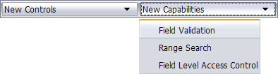
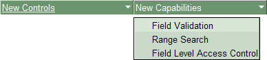
Vertical Toolbars
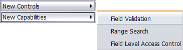
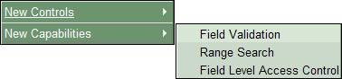
The process of creating and using navigation components can be broken down into these steps.
Create your pages.
Define the way that you want to navigate between these pages.
Create a navigation component that reflects this definition.
Add a two cell table with zero width lines to each page (an invisible table).
Move the page content that will be below or to the right of the navigation component into the bottom or right-most cell of the table.
Add an A5W_INCLUDE() statement to load the navigation component into the top or left-most cell of the table.
To create a navigation component.
Start the Web Projects Control Panel.
Click
 New on the toolbar.
New on the toolbar.Select Web Component and click Next >.
Select Navigation System and click OK.
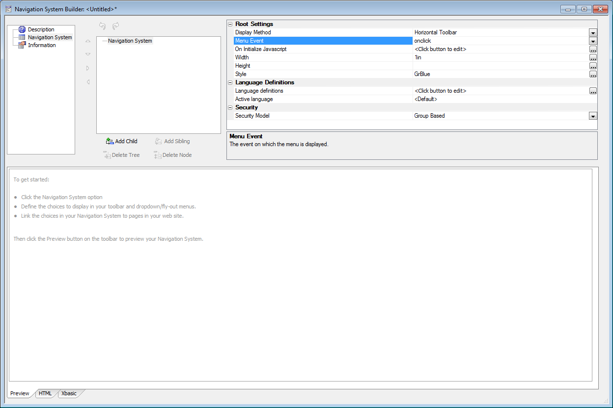
Select the Navigation Type. The options are:
"Horizontal Toolbar"
"Vertical Toolbar"
Select a cascading style sheet from the Style list.
 Note : Navigation
System Components can only use the CSS style
sheets delivered with Alpha Five.
Note : Navigation
System Components can only use the CSS style
sheets delivered with Alpha Five.
Select Navigation System in the menu.
Optionally, change the Root Settings > Menu value from "menu" to a more meaningful name.
Optionally, change the Root Settings > Display Method value. This is the same value set in step 1.
Determine how you want the menu selection to operate in the Root Settings > Menu Event field. There are two options.
"on
click" - which loads the new page when the user clicks the menu selection "on
mouseover" - which loads the new page when the user moves the mouse over the menu selection Optionally, change the default width of the toolbar in the Root Settings > Width field. Text that exceeds this length will wrap to multiple lines. If the width value is empty, menu entries will be immediately adjacent to each other. If the width is 0, menu entries will wrap to the length of the longest word.
If you are creating a Vertical Toolbar, set the Root Settings > Inner Width field. This value must be equal to or smaller than the Root Settings > Width field.
Optionally, change the default width of the toolbar in the Root Settings > Height field. If the height value is empty, the text of the menu entries will define the height of the toolbar.
Optionally, select a cascading style sheet from the Root Settings > Style field. This is the same value set in step 2.
Click 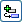 Add Child to add the first menu entry.
In the Node Settings > Type field select the content of the menu entry. The options are:
"Link" - a connection to another page
"HTML" - freeform HTML text
"Separator" - only for vertical toolbars
If the choice in step 2 was "Link":
Optionally, change the access level in the Node Settings > Security field. Users with security access levels greater than or equal to this value will be able to see the menu entry. Users with security access levels lower than this value will not be able to see the menu entry.
The security access level is compared to a protected session variable named session.protectedSecurityLevel. Your application code should set this variable to reflect the access rights of the current user.Optionally, if the entry has child entries, enter one or more rules in the Node Settings > Button highlight rule field. These rules cause the menu entry to highlight when specified pages are displayed. Refer to Creating Button Highlight Rules.
Optionally, enter the text to display in the Node Settings > Text field.
Optionally, click in the Node Settings > Icon field to select an image to display from the <span class=Screen>Select Image</span> dialog box. If you want to add an expression to the end of the URL, see Overriding the Component's Style Sheet.
If Click in the Node Settings > ur
l field to select the page to show when the user clicks the menu entry.If a menu entry haschild menu entries below it, the Node Settings > Fallback URL field will appear instead. This optional field specifies the page to show if no child entries are selected.
Optionally, change the Node Settings > Target field to define the window to use for the page that you open. Leave the entry blank to use the current window.
Optionally, change the Node Settings > Width field to override the default width setting.
Optionally, change the Node Settings > Target field to specify the name of the window which will display the page specified in the Node Settings > ur
l or Node Settings > Fallback URL fields."" = open the page in the current window.
"_blank" = open the page in a new window
If the choice in step 2 was "HTML":
Enter any HTML code that you wish to display in the toolbar entry.
Click in the Node Settings > HTML field to display the HTML Editor. Input and edit the HTML text that you wish to display, then click Save.
Optionally, set a width value in the Node Settings > Container Width field. This value overrides the value set in the Root Settings > Width field.
Repeat steps 1 through 4 to add additional menu elements.
Overriding the Component's Style Sheet
If you want to add an expression to the end of the URL, select the page from the list and place the expression in the URL Parameters textbox, then click OK, as illustrated in this picture.
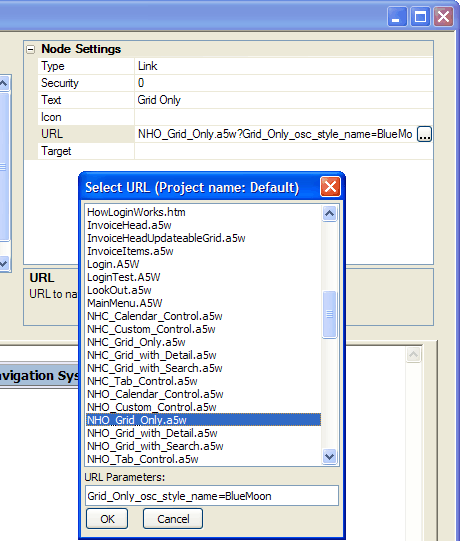
This example is shows one of the most commonly used expressions. It overrides the style sheet(s) of the target page's components, and tells them to use the "BlueMoon" style sheet. Refer to Overriding Grid Properties with URL Arguments for more information.
When a menu entry has child entries, you may specify button highlight rules. A button highlight rule causes the parent menu entry to be highlighted when a specified page is opened. This feature only works when you use the technique described in Placing Navigation System Components.
The page name may be specified exactly or you may use wildcard characters to specify a range of similarly named pages that are located under the same menu entry.
To use button highlight rules:
Select a parent menu entry that has child entries.
Click
 in the Node Settings > Button highlight
rules field to display the Button Highlight
Rules dialog. The Project Pages list is for reference only. It
lists the pages in your project.
in the Node Settings > Button highlight
rules field to display the Button Highlight
Rules dialog. The Project Pages list is for reference only. It
lists the pages in your project.To add a page name or pattern click
 Add to display
the Add Pattern dialog.
Add to display
the Add Pattern dialog.
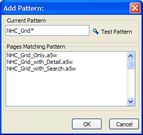
Enter a full page name or a partial page name, using "*" as a wildcard. The "*" character matches multiple characters.
Click Test Pattern to see which pages will cause the parent menu entry to highlight. In the example above, opening three different pages (which are under the same parent menu entry) will cause the parent menu entry to be highlighted.
Click OK to define the button highlight rule.
Each child menu has a Node Settings > Security value. Each user with an access (security) setting greater than or equal to this value will be able to see the menu entry. Each user with a access setting less than this value will not be able to see the menu entry.
This is the same property used to control access to fields in a grid (see also Select the appropriate display format ) and grid update features (see Permissions ).
 Note : A user with
a security level of 0 has unrestricted access.
Any user without an assigned security level has a security level of 0.
Note : A user with
a security level of 0 has unrestricted access.
Any user without an assigned security level has a security level of 0.
Optionally, select a navigation system entry, and use one of the following buttons to change its location on the toolbar.
|
Button |
Horizontal Toolbar |
Vertical Toolbar |
|
|
Move an entry left |
Move an entry up |
|
|
Move an entry right |
Move an entry down |
|
Demote an entry to become a child of the entry above it. The parent entry must be of type link. |
||
|
|
Promote an entry to become a sibling to the entry above it. |
|
If you create an entry with child entries, the Node
Settings > ur
Optionally, select a navigation system entry, and add or delete contents.
|
Button |
Description |
|
Add a child menu item under the selected menu entry | |
|
Add a sibling menu entry under the selected menu entry. | |
|
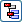 |
Delete the selected menu entry and all child entries below it. |
|
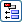 |
Delete the selected menu entry. |
There are two ways to use navigation components.
You can place the component directly on the page (described below in Placing Navigation System Components ).
Use an A5W_INCLUDE() statement to load the navigation component into another page as it is displayed (described below in Loading Navigation System Components ). This is a more flexible approach that allows you to add navigation to finished pages without substantial editing. This approach is more flexible and easier to maintain.
Placing Navigation System Components
Save the page.
Click Insert Component > Select, pick a component, and click OK. This will display the Insert Component dialog box.
Optionally, select a menu entry from the Selected Button list. This will be the selected menu entry when the navigation component loads.
Optionally, clear the Container check box. When cleared, the builder will place only the Xbasic code required to place the navigation component. This option allows you to place the navigation component at any location on a finished page.
If you leave the Container check box checked, you will see that the component is occupying one of the cells of a table with only two cells.
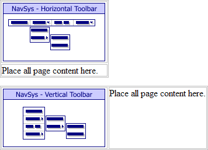
Drag all the other content of the page (components, text, images, etc.) into the empty cell. In the case of a horizontal navigation component, the page content will be in the bottom cell. In the case of a vertical navigation component, the page content will be in the right cell.
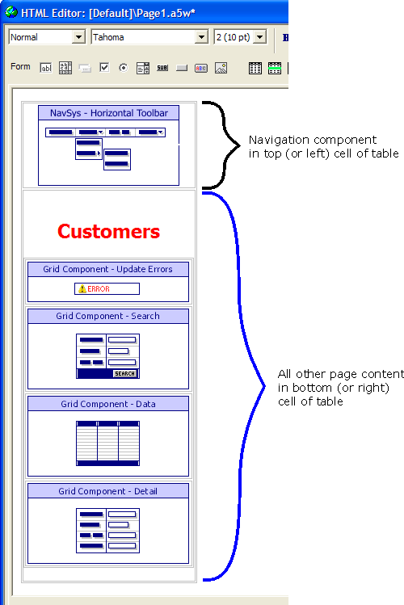
The page illustrated above will look something like the following. Picture
{kind=link}

Loading Navigation System Components
An alternative method for using a navigation component on a page is to load a page that contains the navigation componet with the A5W_INCLUDE() command. To use this method:
Place the navigation component only on a A5W page, in this example named NavHorInclude.a5w.
Place an include statement (similar to the following) between the and